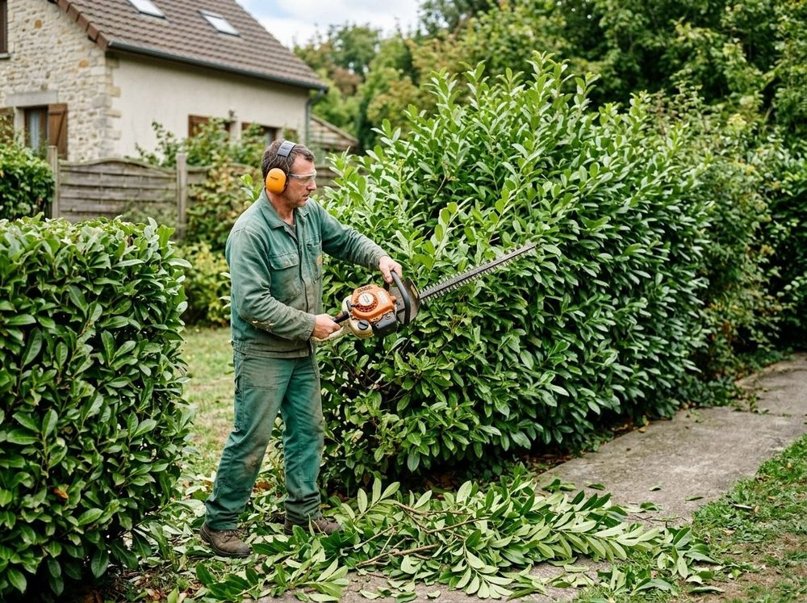
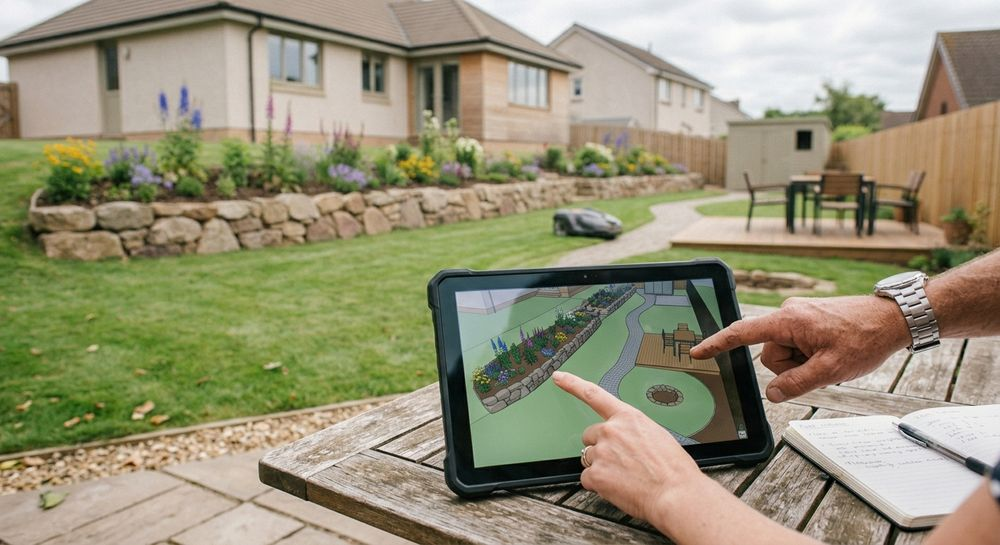
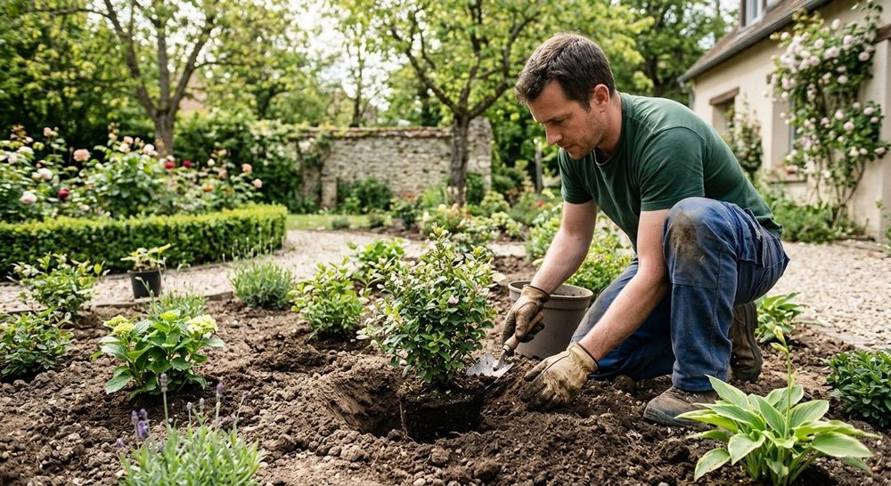
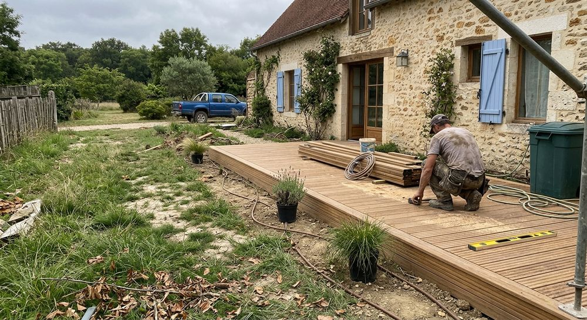

Nos prestations
Conception, plantations, entretien et terrasses
Quatre domaines pour aménager et entretenir votre jardin, à Gif-sur-Yvette et alentour.




Image d’illustration.
Prestation 1
Conception de jardin
Un jardin réussi commence par un plan. Décrivez votre terrain et vos envies, nous vous conseillons.
- Étude de votre terrain
- Plan d’aménagement
- Choix des végétaux
Prestation 2
Plantations et massifs
Des massifs et des plantations adaptés à votre jardin et à votre exposition.
- Création de massifs
- Plantation d’arbustes et de vivaces
- Plantation d’arbres

Image d’illustration.
Prestation 3
Entretien de jardin
Un jardin agréable demande un suivi régulier, en intervention ponctuelle ou à intervalles réguliers.
- Tonte de la pelouse
- Taille de haies et d’arbustes
- Ramassage de feuilles
- Désherbage des massifs


Image d’illustration.
Prestation 4
Terrasses et allées
Des accès et des espaces de vie extérieurs soignés, pour profiter de votre jardin.
- Terrasse en bois
- Allée
- Aménagement des abords
Un projet de jardin ?
Dites-nous ce dont vous avez besoin : nous revenons vers vous pour établir un devis.